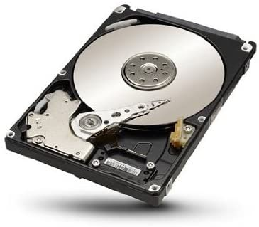
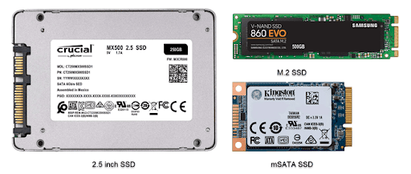

A merevlemez egy mágneses elven működő háttértár, melynél az adatokat a benne található mágneslemezekre írjuk. A mágneslemezek kör alakú, keménymágneses réteggel bevont lemezek. Ezekre az adatokat az író olvasó-olvasó fej írja, koncentrikus körök forájában. Az írás a lemez szélétől a közepe felé történik sávokban. A sávok számozása 0-val kezdődik és az azonos sorszámú sávok együttesét cilindernek nevezzük. Működés közben a lemezek egyenletes sebességel forognak ami lehet 5400, 7200, 10000 vagy 15000rpm. Működés közben légpárna alakul ki, ami megakadályozza a lemezek kopását. Ha leállítjuk a fej a parkoló sávba áll meg, hogy szállítás közben ne karcolódjanak a lemezek.
Az elektromos háttértárak működése (pl.:pendrive, SSD) a biteket tranzisztorok tárolják el. A RAM mintáján működik, de ráírt adatokat kikapcsolás után nem veszítik el. Vannak FLASH és DRAM alapú SSD-k is. De leggyakrabban a FLASH alapú eszközöket használjuk, mert a DRAM alapú nagyon elérhetetlen árú.
